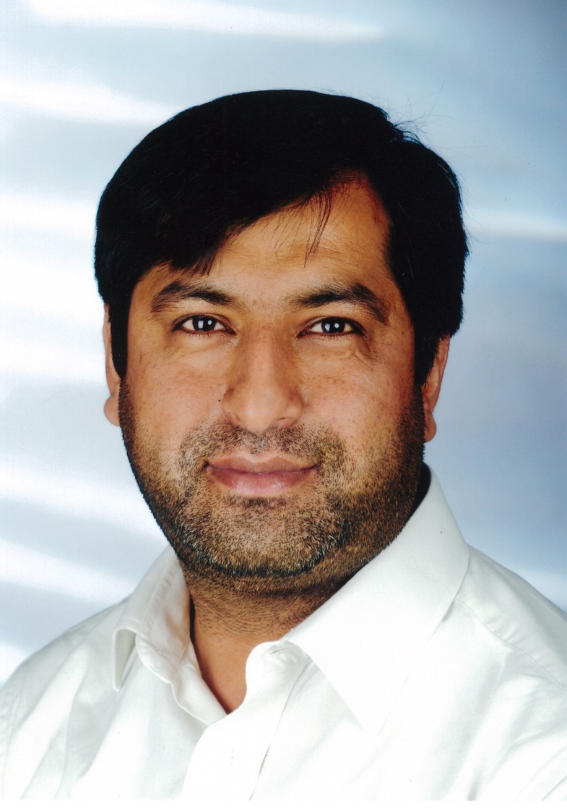

Muhammad Taimoor Khan, Dr.

Senior Lecturer in Cyber Security
Head of Cyber Assurance Lab
Internet of Things and Security Research Centre
School of Computing and Mathematical Sciences
University of Greenwich
Old Royal Naval College
London, UK
SE10 9LS
E-mail: m.khan [AT_DOMAIN] gre [DOT] ac [DOT] uk
Phone: +44 (0)20 8331 8522
Office: QM408 (Queen Marry)


I am a Senior Lecturer in Cyber Security at the University of Greenwich, UK. There I have founded Cyber Assurance Lab in Internet of Things and Security Research Centre. I have received a MSc in Advanced Distributed Systems from the University of Leicester, UK in 2008 and PhD (Dr. techn.) in 2014 in Software Engineering from the Research Institute for Symbolic Computation (RISC), Johannes Kepler University, Austria, both with distinction. I was a Lecturer in Cyber Security at Surrey Center of Cyber Security, University of Surrey, UK during 2018 and 2019. Prior to that I was a Postdoc at the MIT CSAIL, USA (jointly with QCRI) during 2014-2016 and in SERG Group at the Alpen-Adria University, Austria during 2016-2018. My research has been recognised through (i) winning awards in the most premier research venues including CICM 2012, WF-IoT 2016 and ICS-CSR 2019, to name a few and (ii) winning mega research grants by distinguished international and regional funding agencies including H2020, FWF and NSF/DARPA, to name a few. I am a member of ACM and IEEE.
My research interests are in:
- software security
- program analysis
- attack modelling
- security-by-design
Recent News
Jan 2022I am co-organizing (jointly with MIT CSAIL, USA and AI Chip Design Centre, Japan) a special session on Model-based/Data-driven Safety, Security and Privacy in Society 5.0 in ETFA 2022.
Dec 2021I am honoured to contribute to FME Education activities as my course on formal methods is added to FME courses database.
I am very excited to join the Formal Methods Europe community, that encourages teaching, research and development of formal methods activities.
Our paper Towards Scalable Security of Real-time Applications : A Formally Certified Approach has been published in proceedings of ETFA 2021.
Nov 2021Our research proposal Automated Synthesis of Runtime Monitors for Safe and Secure Distributed Industrial Control Systems has been accepted for funding by HFRI, Greece. I am serving as co-I.